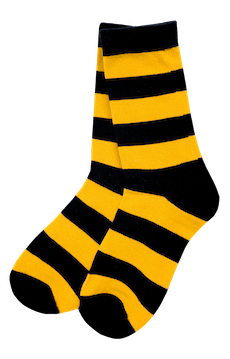

Спасибо за участие в зимнем QR- квесте от Билайн! Ты выиграл классные полосатые носки от Билайн. Твой уникальный промокод для получения приза____
Чтобы получить приз:
- Приходи в павильон «Билайн» №3 на «Катке на ВДНХ», если ты находишься в Москве, или в павильон «Каток у моря», если ты находишься в Санкт-Петербурге.
- Покажи промоутеру Билайн свой уникальный промокод и получи приз.
Обрати внимание, что приз ты можешь забрать только 25 января:
«Каток на ВДНХ» - с 12.00 до 22.00,
«Каток у моря» - с 11.00 до 21.00